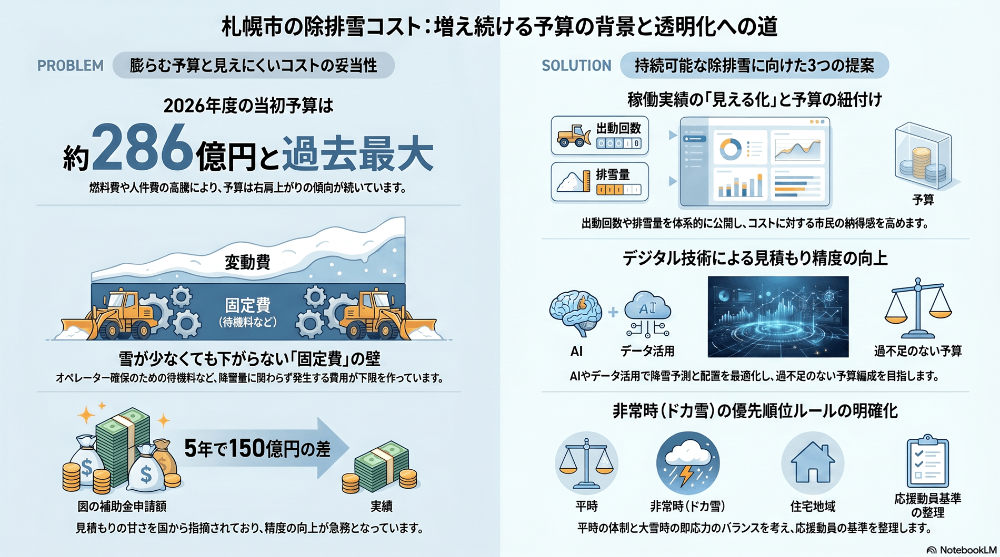

総合的な除排雪体制とコストの妥当性
予算は毎年膨らむ一方、稼働実績の見える化・見積もり精度・地域差・固定費の妥当性の検証が追いついていない。

背景
札幌の除排雪は、建設局・雪対策室が計画し、各区の土木センター（10区）の指示のもと、地区（ゾーン）ごとの除雪センターで民間の共同企業体（JV）が24時間体制で担う重層構造である。費用は人件費・機械経費・燃料費・排雪が中心。雪対策の当初予算は、2020年度の約220億円（当時過去最大）から2024年度 約276億円、2025年度 約285億円、2026年度 約286億円（過去最大）へと近年は増加傾向にある（2021年度は少雪見込みで約214億円に一時減額された年もある）。さらに大雪の年は補正予算が加わり、2025年度は当初の約285億円に除排雪費73億円が追加された。一方で出動回数・排雪量といった稼働実績の体系的な公開は乏しく、見積もり精度や地域差を含めてコストの妥当性を市民が検証しにくい。
主要データ
| 実施体制 | 雪対策室＋10区土木センター＋地区ごとの除雪センター（民間JV） |
|---|---|
| 予算規模（当初） | 2026年度 約286億円（過去最大）。2025年度は当初約285億円＋補正73億円 |
| 国補助の差 | 5年間で実績と申請額に約150億円差（見積もりの甘さを国交省が指摘） |
事実
- 市域を地区（ゾーン）に分け、各除雪センターで複数企業のJVが24時間体制で待機・作業し、各区土木センターが管理・指示する重層体制をとっている。
- 雪対策費は人件費・電気代などの高騰で増加が続き、当初予算に加えて大雪の年は補正予算が組まれる。
- 除雪費の見積もりの甘さにより国の補助金で5年間に約150億円の差が生じ、国交省の指摘に市は「不十分だった」と認めた。
- 新雪除雪の出動はリアルタイムで公表されるが、排雪量・出動回数などの年次の稼働実績は体系的に公開されていない。
解釈
除排雪は自然が相手で需要（降雪）が読めず、人材・機械を平時から確保する固定費が大きい。そのため少雪でも費用は下がりにくく、逆に記録的な大雪には体制が追いつかない——『過不足をうまく調整できない』ことが費用問題の原点にある。予算が増え続けるなかで、稼働実績の見える化・見積もり精度の向上・地域差の説明がなければ、コストの妥当性への市民の納得は得られにくい。
提案
- 出動回数・排雪量・区別配分などの稼働実績を見える化し、予算と対応づけて公開する（説明責任）。
- 見積もり精度の向上（デジタル技術の活用）と、少雪年の固定費・待機料の扱いの整理。
- 平時の待機体制と非常時（ドカ雪）の即応力のバランス設計（応援動員・優先順位ルールの明確化）。
深掘り — 市民の声と答え
雪が少ない年でも費用が高いまま。予算は下げられないの？
下げにくい構造です。除排雪は、待機作業の有無にかかわらず、オペレーターと除雪機械を平時から確保するための固定費が大きく、少雪の年は稼働収入が減るぶん事業者の負担が増します。このため国の検討でも、少雪期にオペレーターの人件費などを補う『基本待機料』のような固定費補償の仕組みが論点になっています。札幌でも少雪だった2020年度に市の負担割合が高まるなど、単純な減額が難しいことがうかがえます。つまり“雪が少ない＝安く済む”とはならず、待機・確保のコストが下限を作っています。
逆に、記録的な大雪のときに追いつかないのはなぜ？
平時の待機体制と非常時の即応力のジレンマです。2026年1月25日には24時間降雪量54cmという1月として観測史上最多のドカ雪となり、多くの区で排雪よりも除雪・道路幅の拡幅・人命を優先する対応に切り替え、苦情も相次ぎました。需要のピークに合わせて人材・機械を抱えると平時は過剰になり、平時に合わせると非常時に足りない——どこに体制の水準を置くかが構造的な課題です。大雪の年は補正予算が加わり、2025年度は当初の約285億円に除排雪費73億円が追加されました。
予算は増えるのに、実際どれだけ働いたかのデータはあるの？
限定的です。公開されているのは主に予算・決算の推移で、新雪除雪の出動はリアルタイムに知らせる仕組みがありますが、拡幅除雪・運搬排雪など他作業の出動情報や、年間の出動回数・排雪量といった稼働実績は体系的に公開されていません。予算の増加と実際の稼働量を市民が突き合わせて検証することが難しいのが現状です。
『見積もりが甘い』とはどういうこと？
除雪費の見積もりの甘さにより、国の補助金で5年間に実績と申請額の間に約150億円の差が生じ、国交省の指摘に市は『不十分だった』と認めました。雪対策審議会でも見積もりの甘さやコスト縮減効果の可視化が論点になっており、より高精度な見積もりが求められています。
地域によって負担や排雪に差があるのは公平なの？
現状は差があります。生活道路の排雪は地域が費用を分担するパートナーシップ排雪が基本ですが、2025・2026年度は厚別区・清田区の全域（約570km）で市が全額負担する排雪モデル事業を実施しています。つまり『市が全額負担の区』と『地域負担のある区』が併存し、区によって負担の有無に差が生じています。モデル事業の検証を経て、負担の公平性をどう設計するかが問われます。
結局、どうすればいいんだろう？
『自然相手で過不足を完全には調整できない』ことを前提に置くのが出発点です。そのうえで現実解は、(1) 出動回数・排雪量・区別配分などの稼働実績を見える化して予算と対応づける、(2) デジタル技術で見積もり精度を上げ、少雪年の固定費・待機料の扱いを整理する、(3) 平時の待機と非常時の即応のバランス（応援動員・優先順位ルール）を明確にする、の3点です。排雪頻度の最適化を費用便益で検討する研究もあり、感覚ではなくデータで水準を決める方向が示されています。
検討体制・メンバー
建設局・雪対策室と各区土木センターが中核。検討の場として札幌市雪対策審議会がある。検討会には除雪JV・建設業団体、財政部局、費用便益分析・統計の専門家、デジタル技術の事業者、地域住民代表を加え、稼働データの公開とコスト妥当性の検証を一体で進めるのが望ましい。
AIノート
AIの貢献度は中〜大。降雪・需要予測で出動と人員・機械配置を最適化し、見積もり精度を高められる。稼働データのダッシュボード化は説明責任を果たしやすくする。ただし固定費そのものは人材・機械の確保という物理的制約で、AIは配分の最適化と可視化が主な役割。